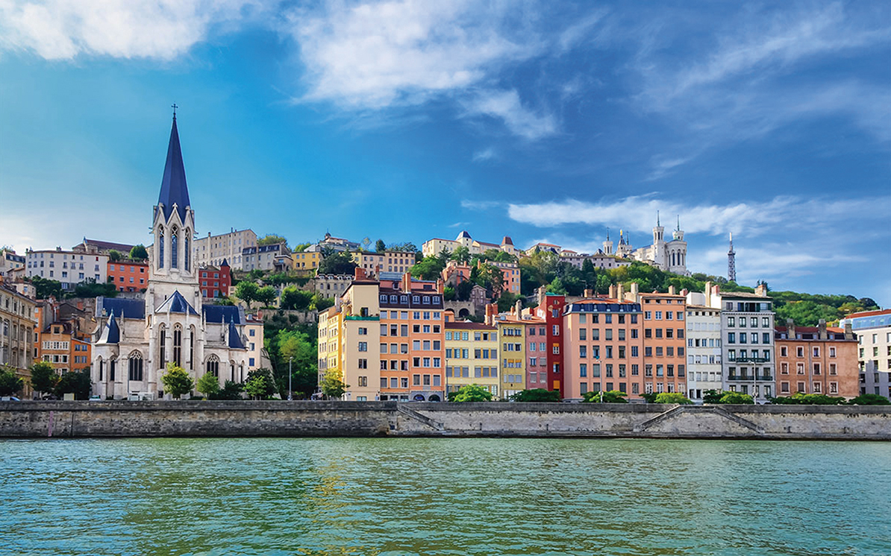
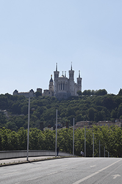
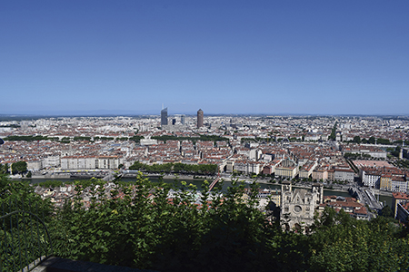
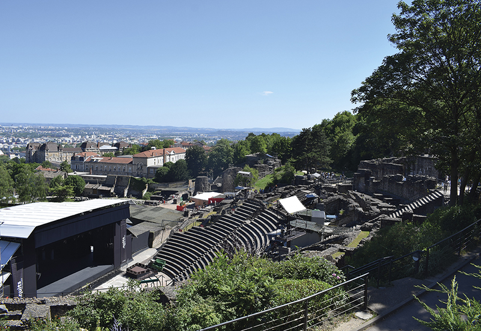
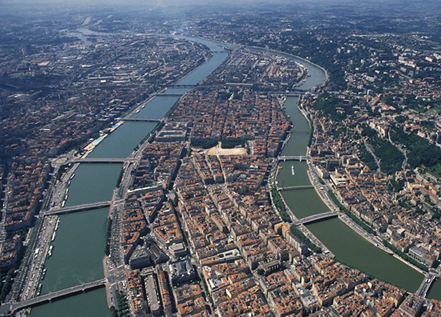
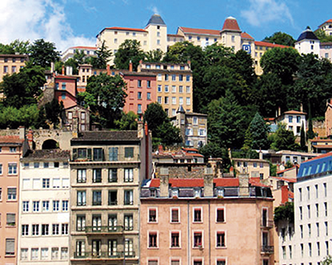
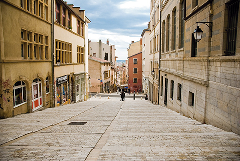

És el barri més antic de Lió. És
una de les zones incloses en el
lloc històric de Lió, i el 1998 es
va declarar patrimoni de la humanitat.
És un barri medieval i renaixentista
que se situa al peu del
turó de Fourvière, al costat del riu
Saona. A la vegada aquest barri
es divideix en tres barris més petits:
Saint-Georges, Saint-Jean, i
Saint-Paul.

FOURVIÉRE
És un turó situat a l’oest de Lió,
en ell trobem un barri amb el mateix
nom. És una de les visites
imprescindibles que has de fer si
vas a Lió, ja que des de dalt es
veuen unes vistes panoràmiques
de tota la ciutat, especialment del
Vieux Lyon i de la Presqu’île, ja
que podem veure la Place Bellecour.
Aquest barri també és patrimoni
de la humanitat.


Vieux Théâtre de Fourvière
A la zona sud del turó de Fourvière
trobem un, lloc arqueològic en
el qual es poden veure les ruïnes
de diferents llocs de l’època
romana. Els més destacats són
l’Odèon i el Teatre, juntament
amb aquests, es troba el Museu
Galo-Romà de Lió. L’Odèon data
del segle II, i el Teatre es diu que
és anterior encara que es va ampliar
al segle II també. L’entrada
per poder visitar tant el Teatre,
l’Odèon i les altres zones és completament
gratuïta.

Presqu'île
La Presqu’île (península en català)
és el centre de Lió. Està situat
entre els rius. A l’Edat Mitjana
i al renaixement era la zona de
contrapunt important al punt fort
de la ciutat que era el Vieux Lyon.
En aquesta zona encara observem
edificis i carrers construïts
entre els segles XV XVI, per això
La Presqu’île vista des de l’aire.
l’any 1999 la UNESCO la va declarar
Patrimoni de la Humanitat.
Avui en dia el que podem trobar
són: cafeteries, restaurants, tendes
de luxe, edificis governamental
i institucions culturals.

Croix-Rousse
La Croix-Rousse és un petit turó
situat dins de la Presqu’île, entre
els dos rius, es divideix en dues
zones: “las pentes” i “la plateau”.
És un barri original molt marcat
per la seva història i el seu passat
en la indústria de la seda, ja
que es va crear a causa de la
massiva arribada de “canuts” (era
El barri de la Croix-Rousse des de baix.
Un carrer en baixada de la Croix-Rousse.
com es coneixia als treballadors
de la seda) perquè es poguessin
instal·lar amb les seves famílies i
aquesta causa també va fer que
el barri creixés molt en poc temps.
Els edificis tenen grans finestres
perquè entri molta llum i els sostres
són alts perquè cabessin els
grans telers.


Cité Internationale
És una nova àrea de la ciutat de
Lió, ocupa l’espai que abans era
la fira de Lió. Està situat entre el
riu Roine i el parc de la Tête d’Or.
El projecte de crear la CitéInternationale
es va iniciar l’any 1986
quan la fira es va traslladar a la
Euroexpo, però la construcció no
comença fins a l’any 1993. Finalment
va ser el 2006 quan es va
acabar de construir. La CitéInternationale
és un lloc mitj cobert per
sostre que conté: oficines, sales
de conferències, hotels, un casino,
el Museu d’Art Contemporàni,
cines i un auditori.